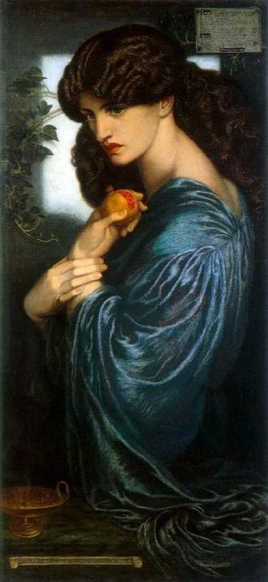
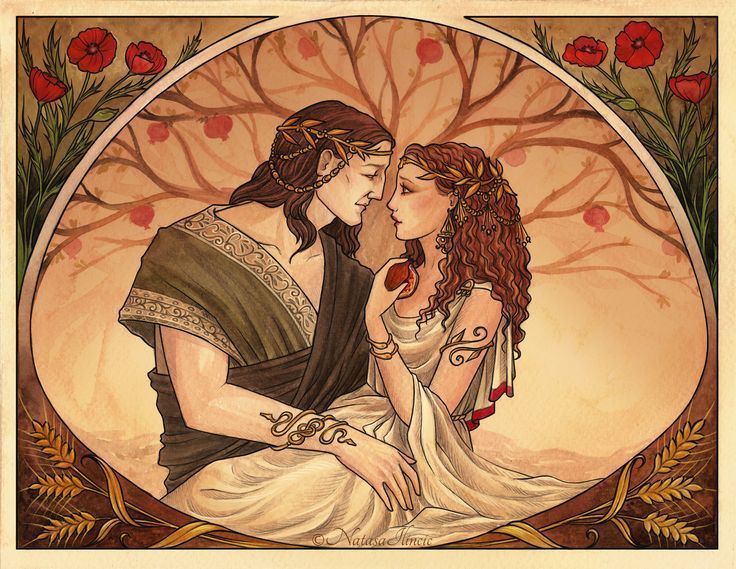

Персефо́на (др.-греч. Περσεφόνη) — в древнегреческой мифологии богиня плодородия и царства мёртвых, владычица преисподней. Дочь Деметры и Зевса, супруга Аида. У римлян — Прозерпина. Входит в число Олимпийских богов. Встречаются также диалектные варианты Персефонея / Ферсефонея / Ферсефона, иногда Феррефатта. Персефона (лат. Persephone) также Ко́ра (др.-греч. Κόρη, лат. Cora — девушка, дева). У римлян — Прозерпина (лат. Proserpina). Культ богини преисподней существовал в Пилосе ещё в микенскую эпоху. Невозможность объяснить имя Персефоны, исходя из греческого языка, заставляет предполагать, что она является древней местной богиней, культ которой был распространён до вторжения греков на Балканский полуостров. У завоевателей греков свой культ Персефоны сливается с местным культом богини-девы Коры. Кора почиталась как богиня плодородия и, возможно, первоначально отождествлялась с богиней-матерью Деметрой. Дальнейшее развитие греческой религии превращает Персефону-Кору в дочь Деметры, но общность культа этих богинь сохраняется на протяжении всей древнегреческой истории. Миф о похищении Аидом в поэмах Гомера не упоминается, что может объясняться его мистериальным характером. Как отмечает профессор В. Г. Борухович, она является «олицетворением растительности — посева, скрытого в земле, и всходов, выбивающихся на поверхность (цикл, повторяемый ежегодно)». В произведениях греческих мифографов и в литературе Персефона стала символом бессмертия души.

Данте Габриэль Россетти. Прозерпина.
Дочь Деметры и Зевса, она была вскормлена матерью и нимфами в пещере. Когда она подросла, к ней сватались Арес и Аполлон. По мифу, вместе с ней росли девушки Афина и Артемида (либо ещё Афродита). Цветком Коры называют нарцисс. Супруга Аида (Плутона), который похитил её и унёс в своё царство (по Гигину, она похищена Плутоном с помощью Зевса). Существовало несколько вариантов места похищения. По наиболее популярному, похищение произошло на лугу у озера Перг рядом с Генной/Энной в Сицилии. В Сиракузах ей посвящён источник Киана, в месте, где разверзлась земля. По другим версиям, либо Плутон спустился под землю в местечке Эринеон близ Элевсина[, либо у реки Химарр в Арголиде, либо на краю гипподрома в Олимпии. Деметра искала дочь по всему миру, предаваясь безутешной скорби, и в это время земля была бесплодна, ничто не всходило на засеянных полях. Узнав о похищении, Деметра обратилась за помощью к Зевсу с требованием вернуть Персефону. Аид отпустил Персефону, но перед освобождением дал ей семь зёрен (либо три зерна, о чём сообщил Гермес) граната (своего атрибутивного плода). Эти зёрна возникли из капель крови старшего Диониса. Персефона, всё это время отказывавшаяся от пищи, проглотила зёрна — и тем самым оказалась обречена на возвращение в царство Аида. Свидетелем против Персефоны выступил садовник Аскалаф. Чтобы успокоить Деметру, Зевс решил, что (согласно гомеровскому гимну и Псевдо-Аполлодору) Персефона будет проводить две трети года на Олимпе, треть — в царстве Аида, либо (согласно Овидию и Сервию) полгода (весну и лето) на Олимпе, другие полгода (осень и зиму) же — в царстве Аида.

Персефона и Аид.